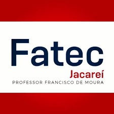

Fatec Jacareí
Desenvolvimento de Software Multiplataforma
2023-2025
Na faculdade, tive a oportunidade de ter contato com diversas tecnologias, como Node.js, JavaScript, TypeScript, PostgreSQL, MongoDB, Git, GitHub e outras. Através dos trabalhos em grupo das Atividades Baseadas em Projetos (ABPs), venho desenvolvendo minhas habilidades interpessoais e aprimorando minha capacidade de trabalhar em equipe. Ainda tenho muito a aprender, mas estou disposto a evoluir constantemente.
As ABPs (Aprendizado Baseado em Projeto) envolvem os alunos em um projeto proposto, através do qual aprendem conteúdo e desenvolvem habilidades de forma ativa. Em vez de uma aprendizagem passiva por meio de aulas expositivas, os alunos investigam e respondem a uma questão complexa, problema ou desafio. A cada semestre do curso, um novo desafio ou problema é proposto para ser trabalhado.